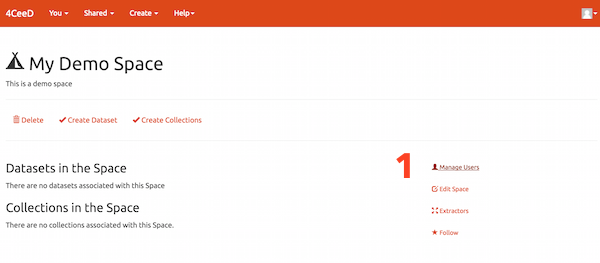

4CeeD Curator FAQ
What is this?
The 4CeeD Curator is a web tool used to organize and manage scientific data files and metadata.
Why use this?
The 4CeeD Curator replaces outdated and inefficient methodologies used in many laboratories for data capture, storage, and organization.
How can the 4CeeD Curator help me?
- All accessible data can be downloaded with its data-model hierarchy preserved.
- Extractors pull descriptive metadata out of files and instrument logs for analysis and discovery.
- Get reliable calibration data and how to reference it.
- Share and search your data and use powerful free-text and faceted search for comparisons.
- Broad set of customizable access control rules.
1. Go to the create spaces page.
2. Choose a name for your space.
3. Give your space a description.
4. Click Create.

1. Select manage users
2. Add user to a role by entering the NetID or start typing for auto suggestions.
3. Click submit to confirm addition.
4. Optionally invite a non 4CeeD user to create an account and access the space.
1. Select a collection or dataset and then choose a space to add it to.
2. A new icon will show what has been shared. Click x to remove the collection/dataset from that space.
1. Click either link to create a new collection.
1. Give a name to your new collection.
3. Optionally give your collection a description.
4. Optionally share the new collection in an existing space.
5. Click create or reset.
A collection is created.

1. Click the create child collection link.
2. View what parent collections the selected collection is in.
1. Give your child collection a name.
2. Provide a description.
3. Click create or reset.
1. Select the My Collections tab from the dashboard to view latest collections.
2. View collections that you have created.
3. View collections that you are collaborating on.
4. View all collections.
1. View or update collection name.
2. View or update collection description.
3. Download all datasets and files in a collection.
4. Create a child collection.
5. View spaces that the collection belongs to.
6. View what parent collections this collection belongs to.
7. View what datasets are in the collection.
1. Click either link to create a new dataset
2. Give your dataset a name.
3. Optionally give your dataset a description.
4. Optionally share the new dataset in an existing space.
5. Click create or reset.
A dataset is created.
1. View latest datasets from the dashboard.
2. View datasets that you have created.
3. View datasets that you are collaborating on.
4. View all datasets.
Individual datasets
1. Add files to a dataset, download or delete a dataset, follow a dataset, or view who the collaborators are.
2. View thumbnail of files in dataset.
3. View the metadata entered by the user from a template.
4. Manage what collections the dataset is in.
5. Manage what space the dataset is in.
6. Create tags for the dataset for better search.
7. Download a file.
1. Select the Metadata tab to view all of the user defined metadata.
2. List of key values entered from a 4CeeD Uploader template.
3. Dataset files can be downloaded if the user is the creator or has been given permission.
3. 4CeeD uses the Library of Congress BagIt Spec which preserves the experiments hierarchy and provides the user all the original files, user defined metadata, and extracted metadata in its original file hierachy.